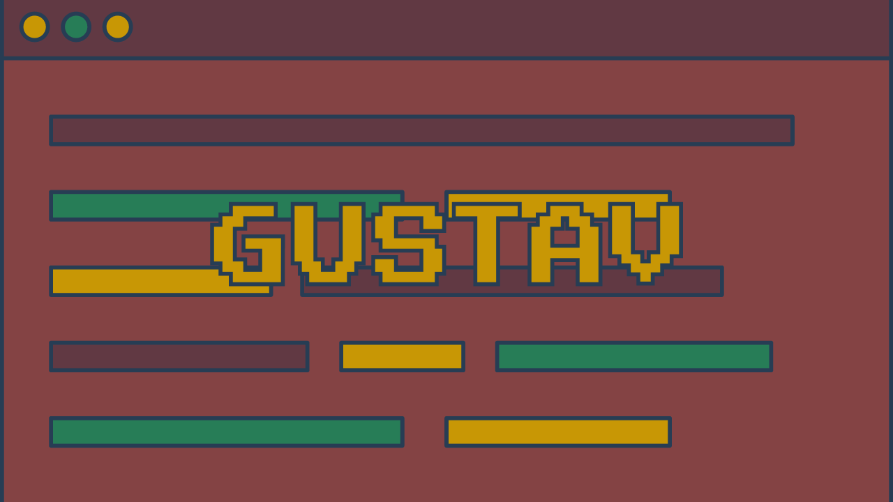

Para o desenvolvimento do jogo, fui utilizado uma programação parecida com a do tutorial disponibilizado pelo próprio GameMaker, programa
utilizado para criar o jogo. Então não me aprofundarei muito na programação dele, e sim, nas ferramentas utilizadas para desenvolvê-lo.
GAMEMAKER
Como mencionado acima, para a programação do jogo foi utilizado GameMaker, programa próprio para desenvolver jogos.
PIXILART
Para arte do jogo, foi utilizado Pixilart, aplicativo disponível tanto para PC quanto para celular, onde com suas vastas ferramentas,
é possível desenvolver ótimas artes e animações em pixel art.
PISKEL
Para animar as pixel art´s (personagem, cenário e etc.) foi utilizado Piskel, porém esse não é um aplicativo muito completo. Por isso recomendo que
você anime seu jogo através do próprio GameMaker.
CANVA
Para as telas de Menu, Controles e Créditos, foi utilizado o Canva. Aplicativo bem famoso e completo, que auxiliou no desenvolvimento de telas mais caprichosas.
PIXABAY
E por fim, para a trilha sonora do jogo, foi usado Pixabay, site que disponibiliza vários sons livre de direitos autorais para utilizar em jogos.